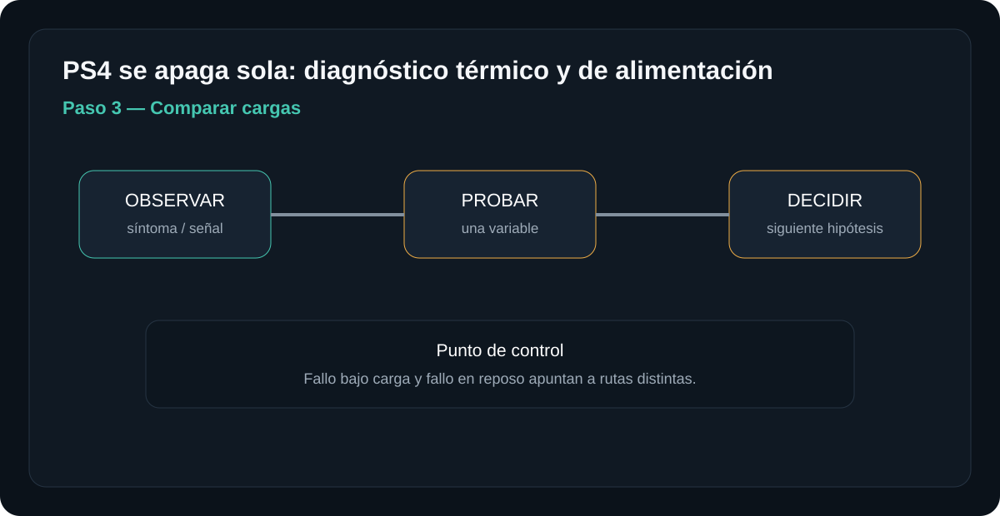
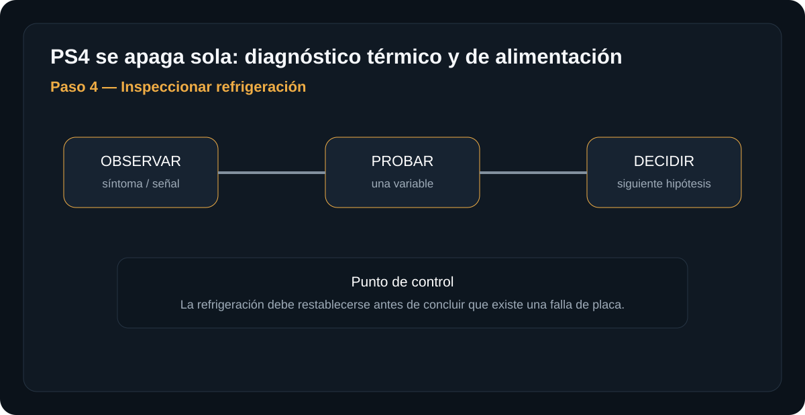
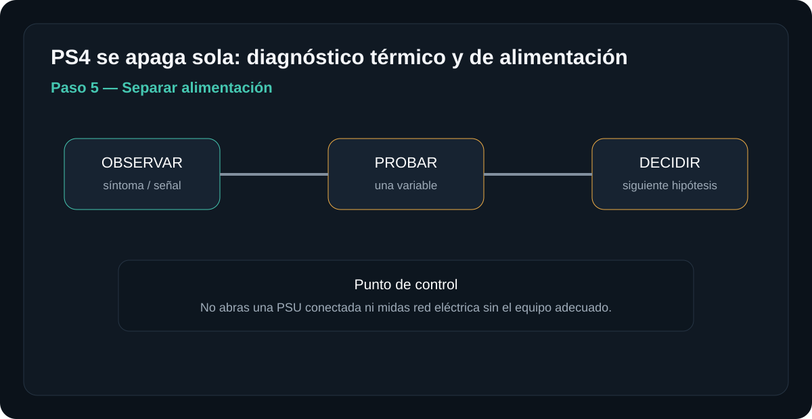

Introducción

La meta es llegar a una hipótesis con evidencia. No se trata de desmontar por desmontar: cada paso elimina una causa posible y prepara el siguiente.
Antes de empezar: seguridad
Retira alimentación y periféricos antes de abrir. No trabajes con una fuente de red abierta ni realices mediciones energizadas si no tienes formación e instrumental apropiados.
- Trabaja sobre una superficie limpia, seca y bien iluminada.
- Organiza tornillos y conectores por etapa.
- Fotografía conexiones antes de desconectarlas cuando desmontes.
- No fuerces una cubierta: una resistencia inesperada suele indicar una fijación pendiente.
Herramientas y material
Diagnóstico paso a paso
Registrar el síntoma
Anota si se apaga al instante, después de minutos, durante un juego o incluso en reposo. Escucha si el ventilador cambia de velocidad.
Qué hacer
- Cronometra cuánto tarda en apagarse: menos de 1 minuto apunta a corto/falla de alimentación; 10-30 minutos bajo carga apunta a sobrecalentamiento; horas o apagados aleatorios en reposo apuntan a otra causa.
- Escucha el ventilador justo antes del apagado: si acelera a máxima velocidad segundos antes, es casi seguro protección térmica; si se apaga sin cambio audible, sospecha más de la fuente.
- Anota si el apagado ocurre siempre con el mismo tipo de actividad (juego exigente) o de forma aleatoria incluso en el menú.
El tiempo hasta el fallo es una pista diagnóstica importante: un patrón consistente ligado a cierto juego apunta a causa térmica; un patrón aleatorio apunta más a alimentación.
Resultado esperadoPatrón ligado a carga y tiempo → sigue a los pasos 2-4. Apagado inmediato o aleatorio sin relación con carga → salta al paso 5.
Revisar ventilación externa
Comprueba que las rejillas no estén obstruidas y que la consola tenga espacio alrededor. Retira polvo superficial sin introducir humedad.

Qué hacer
- Verifica al menos 10-15 cm de espacio libre en la rejilla de salida trasera y que la consola no esté en un mueble cerrado sin ventilación.
- Confirma la orientación correcta de la consola según el diseño (vertical solo con el soporte específico; sin él, tapa parcialmente las rejillas).
- Retira el polvo superficial con aire comprimido en ráfagas cortas, sin introducir humedad ni forzar el ventilador a girar en vacío.
Si mejora el flujo de aire, el problema puede ser térmico: repite la misma actividad que provocaba el apagado tras mejorar la ventilación para confirmarlo.
Resultado esperadoMejora notable o desaparece el apagado → el entorno de uso era la causa. Sin cambio → continúa al paso 3.
Comparar cargas
Observa si el apagado aparece solo bajo carga. No provoques intencionadamente sobretemperatura.

Qué hacer
- Prueba con una actividad ligera (menú principal, app de streaming) durante 20-30 minutos y observa si se apaga.
- Prueba después con el juego o actividad exigente que provoca el apagado, cronometrando el tiempo exacto hasta que ocurre.
- No fuerces una sobrecarga extrema tapando rejillas a propósito para "confirmar" el diagnóstico: la comparación entre carga ligera y normal ya es información suficiente.
Fallo bajo carga y fallo en reposo apuntan a rutas distintas: solo con juegos exigentes es casi con certeza térmico; también en reposo traslada la sospecha a la fuente de alimentación.
Resultado esperadoSolo falla con carga alta → continúa al paso 4. Falla también en reposo o carga ligera → salta al paso 5.
Inspeccionar refrigeración
Si se desmonta, revisa ventilador, disipador y transferencia térmica. No rasques superficies ni apliques pasta térmica sin limpiar correctamente.

Qué hacer
- Con la consola apagada y desconectada, retira la tapa según el manual del modelo exacto (original, Slim y Pro tienen disipadores distintos).
- Revisa el disipador y las aspas del ventilador en busca de pelusa compactada, la obstrucción más común en consolas con 2+ años de uso.
- Revisa la pasta térmica entre el procesador (APU) y el disipador: reseca o casi ausente ya no transfiere calor bien; límpiala con alcohol isopropílico 90%+ y aplica una cantidad pequeña (tamaño de un grano de arroz) al reemplazarla.
La refrigeración debe restablecerse antes de concluir que existe una falla de placa: muchos apagados por protección térmica se confunden con fallas de placa cuando es solo polvo o pasta degradada.
Resultado esperadoLimpieza o cambio de pasta resuelven el apagado → era térmico. Persiste con refrigeración en buen estado → continúa al paso 5.
Separar alimentación
Si el apagado es inmediato o no guarda relación con temperatura, la alimentación gana prioridad. Las mediciones internas deben ser realizadas por personal capacitado.

Qué hacer
- Si el apagado es inmediato (segundos tras encender) o sin relación con temperatura ni carga, la fuente de alimentación interna pasa a ser la sospechosa principal.
- Prueba con un cable de poder distinto y confirmado en buen estado, para descartar esa variable antes de sospechar de la fuente interna.
- Documenta si el apagado coincide con eventos eléctricos externos (tormenta, corte de luz reciente): puede indicar daño previo por una fluctuación de voltaje.
No abras una PSU conectada ni midas la red eléctrica sin el equipo adecuado: los capacitores retienen carga peligrosa incluso desconectada, y la red energizada requiere formación específica.
Resultado esperadoCon cable descartado y patrón de apagado inmediato o sin relación térmica confirmado, el diagnóstico apunta a la fuente interna: esta etapa requiere un técnico con multímetro y experiencia en electrónica de potencia.
Una prueba negativa no es un fracaso: es información. Registra qué se probó, con qué pieza o condición y qué cambió. Evita reemplazar varios componentes al mismo tiempo.
Tabla rápida de diagnóstico
| Síntoma | Primera comprobación | Siguiente hipótesis |
|---|---|---|
| Se apaga tras calentarse | Ventilador/flujo anormal | Prioridad: térmica |
| Se apaga al instante | Sin patrón térmico | Prioridad: alimentación/protección |
| Solo bajo carga | Juegos exigentes | Prioridad: térmica o alimentación |
Fuentes, licencias y referencias
- Fuente de imagen / referencia — revisa la licencia indicada en la ficha antes de redistribuir.
- Creative Commons BY-SA 4.0 cuando aplique a la imagen.
- iFixit / documentación de reparación como referencia técnica para PlayStation cuando corresponda.